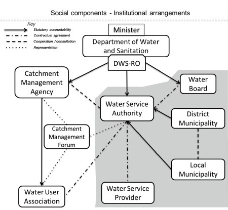
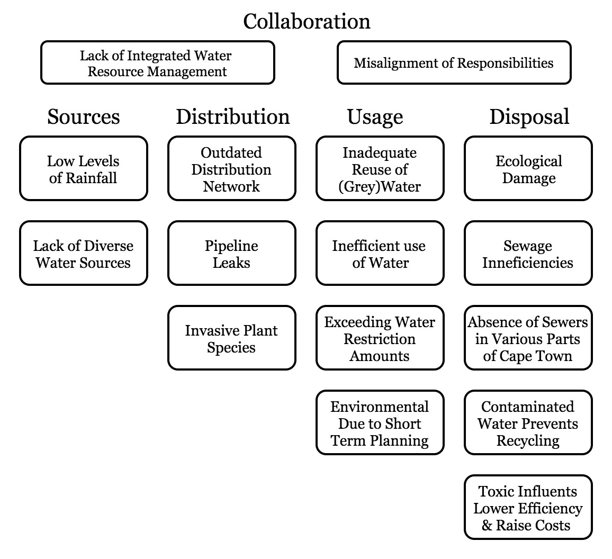

Since 2015, the city of Cape Town, South Africa, has experienced a lack of rainfall, which has since turned into a large-scale drought crisis leading to the approach of day-zero [1]. However, due to effective emergency measures such as rationing, day-zero has now been delayed multiple times, eventually landing at some point in 2019 [2]. Although positive, these measures do affect many aspects of daily life for society, as well as many sectors of industry, most notably agriculture. Regarding society, there is a rationing of water to 50 litres per person, per day whether at home, school, or work [3]. Regarding agriculture, crop production meant for local produce and export have both decreased by 20-25%, which leads to a higher dependency on import, less income for farmers, and fewer jobs [4].
Scientists expect the frequency, length, and severity of droughts to increase worldwide due to climate change [5]. Over the last fifteen years, Cape Town has experienced a population growth of 38% (from 2,892,243 in 2001 [6] to 4,004,793 in 2016 [7]), and continues to grow. Cape Town will have to anticipate for the changing climate, population growth, and change in the viability of current water resources. Besides investments into new water resource projects and technologies, adaptation to scarcity of water might require a change of society's mindset and attitude towards water consumption. The combination of these factors increase the need for a strong and reliable water supply. Worldwide, there are many cities, including Cairo, Beijing, Jakarta, and Mexico city, that are expected to face similar water-crises [8].
This website, aims to give an overview of the proposed mitigation strategies addressing the different levels of the water-crisis in the Western Cape. It furthermore, provides insights in how these approaches can be integrated to facilitate the improvement of water management and the development of a smarter water network in Cape Town.
A stakeholder analysis describes the current governance and management landscape of the region’s water sources. There is a clear description of how the various interventions of sources, distribution, usage, and wastewater treatment fit together into a bigger picture. The limitations of the suggested approaches, as well as ethical implications, are also brought to light.
Stakeholder Analysis
South Africa has adopted a complex decentralised water governance landscape that aims to include perspectives from all major stakeholders. Decision making for water management is dispersed to increase transparency, and make public needs and interests easily accessible. Therefore, the water supply in South Africa is ensured at three main levels of management: national, provincial, and regional [9]. Figure 2 illustrates this decentralised water management system.
At the national level, the Department of Water and Sanitation (DWS) is responsible for setting water policies and regulations [11], which extend to provincial and local levels. Through nine regional offices, technical and managerial operations of stakeholders throughout the water cycle are monitored, and national policies are implemented, monitored, and enforced [11]. Although DWS is a national governmental entity, they have many responsibilities at all levels of the water management system.
At the provincial level, state-owned and area-specific water boards are tasked with bulk water supply, several wastewater treatment plants and retail services [12]. These water boards are overseen by the DWS, and provide water to Water Service Authorities (WSA) (often municipalities). Furthermore, South Africa has to establish Catchment Management Agencies (CMAs) to increase the involvement of local communities in decision-making processes and outsource water management to specific geographical contexts. The CMAs report back to the DWS, which is ultimately accountable for the effective functioning of the CMAs [13]. The CMAs can delegate tasks to water boards, but are also directly involved at local levels by considering civic opinion, concerns, and input through Catchment Management Forums, (CMF) and Water User Associations (WUA).
At the regional level, the WSAs are responsible for ensuring and overseeing effective distribution, retail, consumption, and treatment of water within their area. They are tasked with developing a five-year Water Service Development Plan (WSDP), which must be updated on an ongoing basis, and submitted annually to the DWS [12]. Consumers may be involved through WUAs, which are also controlled by the minister of the DWS. Via CMFs, users can get directly in touch with people from the government and voice their ideas and concerns [14].
Problem Analysis
From prior research, the causes for the water crisis have been identified to be multiple critical problems in all four previously defined phases of the water cycle: sources, distribution, usage, and disposal. Moreover, flaws across the water cycle (e.g., responsibility for leakages, lack of recycling, and polluting wastewater disposal) often appear to be caused by a lack of communication and collaboration between relevant stakeholders, e.g., DWS, sewage and dam maintenance, water treatment plants, and the City of Cape Town. Collaboration should serve as a connecting factor throughout these different phases of the water cycle (Fig. 1).
These challenges were addressed by (i) investigating the diversification of the water supply through desalination, (ii) devising strategies to reduce water consumption in households and agriculture, (iii) an assessment of the environmental impact of current desalination plants near the marine outfalls, (iv) improved communication strategies between stakeholders, and (v) prediction systems for water sources and consumption. Although many critical problems were not researched, a stronger focus on collaboration, water management and usage monitoring will be required to address the lack of data on distribution for the future.